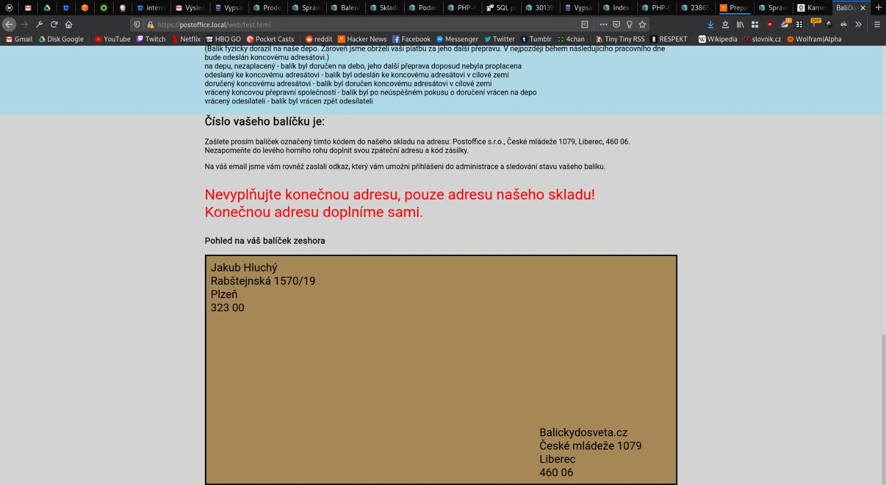
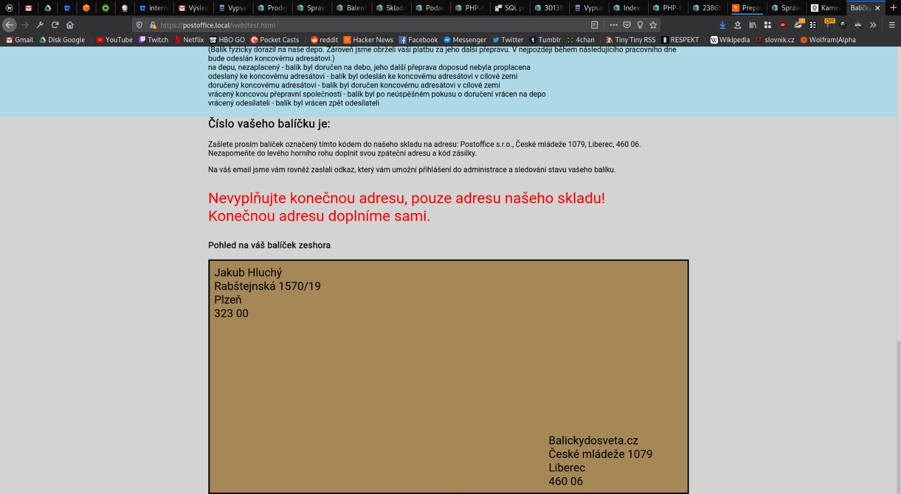

Poznámky
Otevřené otázky, nápady
- Jaký čárový kód tisknem na balíky? Je to EAN-13?
- Je povinnost posílat dobropis, v případě, že zákazník zruší objednávku, ale ještě neposlal penize?
- Pro oveření identity volajícího zákazníka se můžem optat na kód balíku. Nebo tačí spoléhat na telefonní číslo na objednávce? UC-59.
- Zrušíme tisknuti doručoivací adresy na interni štítek? V UC-51 se adresa muze zmenit a v pripade nesparovaneho baliku ji nemusime znat.
- Budem uchovávat původní hodnoty z objednávky? (Cena za dopravu, dorucovaci adresa, adresa odesilatele, ....)
- Pokud se nepodaří ověřit identitu volajícího zákazníka nebo příchozího emailu. Pak nechávám na domluvě, jak takovou událost pracovník podpory zaznamená k dalšímu posouzení. Řešení by mohla být kontaktní historie nenavázaná na zákazníka.
- Potřebujeme mít někde uloženou objednávku, tak jak jí zadal zákazník? Například pro porovnání. Určitě bude v auditním logu.
- U stavů mít detailní obrázek se stavy a přechodů napsané UC.
- Pracovník podpory si při řešení chybových stavů balíku nemůže objednat další focení nebo měření.
- Když označují balík za doručený, zatím nezohlednuji, že existuje více než jedno depo.
- Nebudem řešit stav, kdy fakturace proběhne na osobu na jedné adrese, ale zpáteční adresa balíku má být jiná.
- Když dojde ke storno, vystavení dobropisu možné ne povinné. Má se dobropis vystavit i když nepřisli peníze?.
Kontakty na nás:
| Kdo | Github account | |
|---|---|---|
| Bivoj | xbivoj@gmail.com | |
| Viktor Friš | viktorfris420@gmail.com | |
| Vojta Balák | vojtech.balak@internet-handel.cz | remedan-ih |
| David Ježek | david@internet-handel.cz | DDejv |
| Honza Jirout | jirout@gmail.com | jajir |
| Jiří Matějka | jirimatejka1@gmail.com | jirimatejka1 |
| Anton Loginov | antonloginovih@gmail.com | antonloginovih@gmail.com |
| Petr Hanišák | petrhanisak.ih@gmail.com | |
| Martin Jonák | martinjonak.ih@gmail.com |
Zápisy ze starých schůzek
08.04.2020
Na čem jsme se domluvili:
- Vojta sepíše vývojařské desatero a přidá ho do dokumentace.
- Honza:
- Pozve lid do repa
- Repo udělá privátním
- Nástřel UC na hromadné podávání
- Projekt pojedem podle analýzy, co není popsané neprogramujem.
- Co jsme nakousli, ale nedokončili:
- Vznikne nejaká vrstva technické dokumentace mezi analýzou a php kódem.
- Naplánuju schuzku na 10.4.
- Ostatní kluci vyzkoušíjí php frameworky a založí kostru projektu.
07.03.2020
- Prošli jsme všechny UC.
- Nebudem podporovat odložené poslaní balíků.
- Přepravce a dopravce není to samé. Postman má blíž k činnosti dopravce. DPD a česká posta jsou dopravci.
02.03.2020
- Prosli jsme procesy objednavky a balíků
29.02.2020
- Nebudem aktivne rikat zakaznikovy, jakeho dopravce pouzivame. Muze pozdeji zjistit.
- Nebudel lidi navolavat z rozdelanych zadosti. Tede je ani nebudem ukladat.
- Prevazujem baliky z odchozi fronty vzdy. Radeji neodeslem, nez neprevazime.
28.02.2020
- Omezíme pouze na Německo.
- Řešili jsme UC-04.
24.02.2020
- Zakaznik se nemusi hlasit heslem/loginem a ani nema tuto moznost.
- Jako admin nepotrebuju videt nic, udelam ad-hoc vypis z databaze.
- Komunikacni kanaly pro zakaznika telefon, email, zadavaci formular pro poslani?
- Ano chceme zakaznikovi umet potvrdit doruceni.
- Nektere UC rovnou oznacime jako nizssi prioritu.
- Prosli jsme cast UC supportu.
- Vznikne zmenovy zurnal, staci standardni textovy log, kde bude cas a zmena pole u objednavky. Nebude delat vyhledavani v zurnalu.
- Dobropisy nebudem automatizovat v prvni fazi.
- Reseni odmitnutych nebo nedorucenych zasilek.
- Dostal jsem starsi verze obrazovek registracni formular.
- Od klienta data pouze sbirame, validace se dela klidne rucne.
22.02.2020 co jsme si rikali
- Bivoj potrebuje navrh systemu. Hlavne:
- Analyzu & logickou architekturu.
- Cil je usetrit opakovane vysvetlovani reseni.
- Zalezi mu na moznosti dal system rozvijet.
- Tisk stitku
- Napojeni na prepravce (DPL). Uz je v nejakem stavu hotove.
- Registrace.
- Web pro zakazniky. (Jmeno tel. cilova adreasa, zpatechni).
- Prehazovac
- Pokyny k uhrade pro zakaznika.
- Pipac.
- Admin.
- Cekani na uphradu. Zbozi neposlu dal. Denne ho projedu znovu.
- Rozhrani pro eshopy. Hromadna podani. V dalsich fazich API.
- GDPR prijatych informaci.
- Na balik bud vytisknout carovy kod, QR code, nebo napsat hash.
- bude to bezet v ruznych jazycich na ruznych domenach.
- Co zeme, kam dorucujem to vlastni trasa baliku.
- Pokud DPD nedoruci, pak vraci zpet.
 
